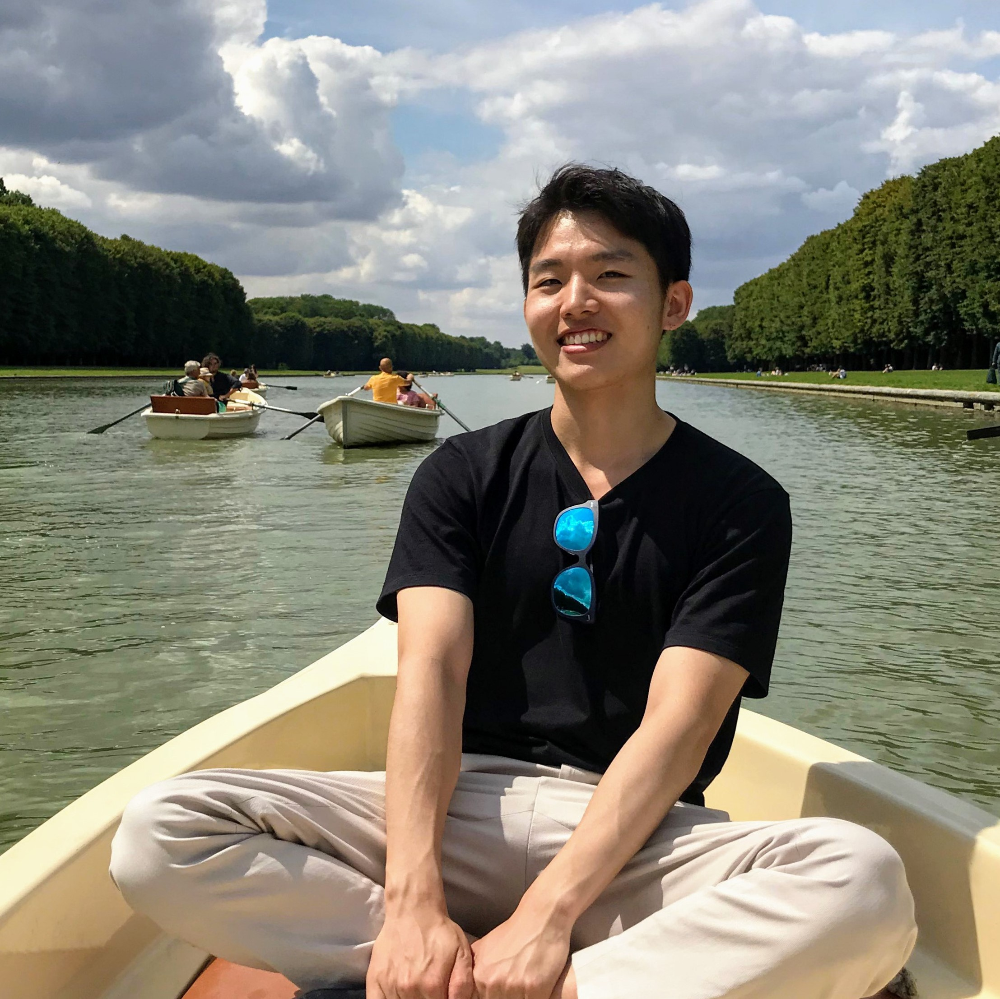

| 
CV | Google Scholar | Github |
I will be starting my graduate study in the Dept. of Aeronautics and Astronautics at MIT from Spring 2021. Currently, I am a research scientist in the Dept. of Aerospace Engineering at KAIST. I obtained my B.S. (2020) from KAIST in electrical engineering with a double major in mathematics, where I was advised by Prof. Han-Lim Choi, Prof. Hye Won Chung, and Prof. Sung-Ju Lee. I was also doing research at MIT Media Lab under supervision of Prof. Fadel Adib during summer 2018. My current research interests lie in the span of perception, inference, and machine learning in robotics systems: especially, developing theoretically principled algorithms for the efficient use of information in data/systems. During my undergraduate study, I have fortunately conducted various research projects at KAIST and MIT not only for theoretical works in inference and learning but for building and testing actual sensing systems. |

 |
preprint |
abstract |
code
Mapping dynamic and three-dimensional (3-D) environments is essential for robots and UAVs, but also a challenging task to consider the increased dimensions in both space and time compared to 2-D static mapping. This paper presents a kernel-based 3-D dynamic occupancy grid mapping algorithm, called K-DOGM, that distinguishes between static environments and moving objects while estimating the velocities of dynamic grids as well. The proposed algorithm brings the benefits of kernel inference such as its simple computation, consideration of spatial correlation, and natural measure of uncertainty to the domain of dynamic mapping. We formulate the dynamic occupancy grid mapping problem in a Bayesian framework and represent the map through Dirichlet distribution to apply kernel inference in a recursive way with intuitive heuristics. The proposed algorithm demonstrates its promising performance compared to baseline in diverse scenarios simulated in ROS environments. |

|
arXiv |
abstract
This paper proposes an online learning method of Gaussian process state-space model (GP-SSM). GPSSM is a probabilistic representation learning scheme that represents unknown state transition and/or measurement models as Gaussian processes (GPs). While the majority of prior literature on learning of GP-SSM are focused on processing a given set of time series data, data may arrive and accumulate sequentially over time in most dynamical systems. Storing all such sequential data and updating the model over entire data incur large amount of computational resources in space and time. To overcome this difficulty, we propose a practical method, termed onlineGPSSM, that incorporates stochastic variational inference (VI) and online VI with novel formulation. The proposed method mitigates the computational complexity without catastrophic forgetting and also support adaptation to changes in a system and/or a real environments. Furthermore, we present application of onlineGPSSM into the reinforcement learning (RL) of partially observable dynamical systems by integrating onlineGPSSM with Bayesian filtering and trajectory optimization algorithms. Numerical examples are presented to demonstrate applicability of the proposed method. |
 |
arXiv |
abstract |
bibtex
This paper considers the problem to plan mobile sensor networks for target localization task in GPS-denied environments. Most researches on mobile sensor networks assume that the states of the sensing agents are precisely known during their missions, which is not feasible under the absence of external infrastructures such as GPS. Thus, we propose a new algorithm to solve this problem by: (i) estimating the states of the sensing agents in addition to the target’s through the combination of a particle filter (PF) and extended Kalman filters (EKF) and (ii) involving the uncertainty of the states of the sensing agents in planning the sensor networks based on the combined filters. This approach does not require any additional internal/external sensors nor the prior knowledge of the surrounding environments. We demonstrate the limitations of prior works in GPS-denied environments and the improvements from the proposed algorithm through Monte Carlo experiments.
@inproceedings{min2020informative,
title={Informative Planning of Mobile
Sensor Networks in GPS-Denied Environments},
author={Min, Youngjae and Park, Soon Seo
and Choi, Han-Lim},
booktitle={AIAA Scitech 2020 Forum},
pages={1342},
year={2020}
}
|
|
|
arXiv |
abstract |
bibtex
This paper investigates non-myopic path planning of mobile sensors for multi-target tracking. Such problem has posed a high computational complexity issue and/or the necessity of high-level decision making. Existing works tackle these issues by heuristically assigning targets to each sensing agent and solving the split problem for each agent. However, such heuristic methods reduce the target estimation performance in the absence of considering the changes of target state estimation along time. In this work, we detour the taskassignment problem by reformulating the general non-myopic planning problem to a distributed optimization problem with respect to targets. By combining alternating direction method of multipliers (ADMM) and local trajectory optimization method, we solve the problem and induce consensus (i.e., high-level decisions) automatically among the targets. In addition, we propose a modified receding-horizon control (RHC) scheme and edge-cutting method for efficient real-time operation. The proposed algorithm is validated through simulations in various scenarios.
@article{park2019distributed,
title={A distributed ADMM approach
to non-myopic path planning
for multi-target tracking},
author={Park, Soon-Seo and Min, Youngjae
and Ha, Jung-Su and Cho, Doo-Hyun
and Choi, Han-Lim},
journal={IEEE Access},
volume={7},
pages={163589--163603},
year={2019},
publisher={IEEE}
}
|

|
arXiv |
abstract |
bibtex |
slides
Guiding the design of neural networks is of great importance to save enormous resources consumed on empirical decisions of architectural parameters. This paper constructs shallow sigmoid-type neural networks that achieve 100% accuracy in classification for datasets following a linear separability condition. The separability condition in this work is more relaxed than the widely used linear separability. Moreover, the constructed neural network guarantees perfect classification for any datasets sampled from a separable probability distribution. This generalization capability comes from the saturation of sigmoid function that exploits small margins near the boundaries of intervals formed by the separable probability distribution.
@inproceedings{min2019shallow,
title={Shallow Neural Network can
Perfectly Classify an Object following
Separable Probability Distribution},
author={Min, Youngjae and Chung, Hye Won},
booktitle={2019 IEEE International
Symposium on Information Theory (ISIT)},
pages={1812--1816},
year={2019},
organization={IEEE}
}
|
|
|
|

|
|
 |
abstract |
bibtex
Single crystalline silicon wafers having (100), (110), and (111) directions are employed as specimens for obtaining slowness profiles. Leaky Lamb waves (LLW) from immersed wafers were detected by varying the incident angles of the specimens and rotating the specimens. From an analysis of LLW signals for different propagation directions and phase velocities of each specimen, slowness profiles were obtained, which showed a unique symmetry with different symmetric axes. Slowness profiles were compared with elastic moduli of each wafer. They showed the same symmetries as crystal structures. In addition, slowness profiles showed expected patterns and values that can be inferred from elastic moduli. This implies that slowness profiles can be used to examine crystal structures of anisotropic solids.
@article{min2016comparison,
title={Comparison of Slowness Profiles
of Lamb Wave with Elastic Moduli
and Crystal Structure
in Single Crystalline Silicon Wafers},
author={Min, Youngjae and Yun, Gyeongwon
and Kim, Kyung-Min and Roh, Yuji
and Kim, Young H},
journal={Journal of the Korean Society
for Nondestructive Testing},
volume={36},
number={1},
pages={1--8},
year={2016},
publisher={The Korean Society
for Nondestructive Testing}
}
|
|
abstract |
bibtex
In the present work, the magnitude of friction force was predicted to be reduced by out-of-plane oscillation applied to contact surface based on `cold-welding model.' Angular acceleration of the disk that rotates by a weight connected to the pulley was measured while out-of-plane oscillation is applied to the specimen contacting the surface of the disk using BLT (Bolt-clamped Langevin Transducer). The friction force was calculated from the measured angular acceleration. As a result, the magnitude of friction force shows decreasing tendency when the amplitude of the ultrasonic out-of-plane oscillation increases. It implies that out-of-plane oscillation also induces the reduction of the friction force.
@inproceedings{kim2014measurements,
title={Measurements of sliding friction forces
under ultrasonic oscillations:
Out-of-plane oscillations},
author={Kim, Soohyun and Min, Youngjae
and Kim, Young H},
booktitle={2014 IEEE International
Ultrasonics Symposium},
pages={2518--2520},
year={2014},
organization={IEEE}
}
|
|